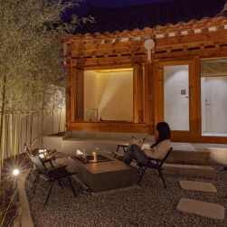
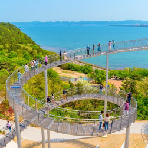
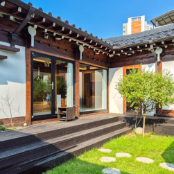

서비스바로가기
갑자기 떠나고 싶을 때
금주 출발여행
한 번쯤 가봐야할 인생 여행지
이달의 추천여행
믿고 가는 즐거운 여행
고객님들의 여행후기
-
★★★★★ 이*혜님
기사님은 출발시간 전인데도 계속 에어컨 틀어주셔서 그나마 쉼을 할 수가 있었습니다. 차가 밀리지 않아 서울 일찍 도착해서 좋았고 안전 운전해 주신 기사님께 감사드립니다.
-
★★★★★ 신*정님
선비체험과 엿만들기 체험은 이색적이었고, 제공되는 식사도 너무 맛있었습니다. 두손 가득 신나는 고령여행 강추합니다.
-
★★★★★ 김*은님
조금 더웠지만 예쁜 하늘 덕분에 더 신났던 영동여행 가이드님도 잘 챙겨주시고 양손가득 포도도 들고오고 너무 잘 다녀왔습니다.
-
★★★★★ 김*자님
바다정원카페에서 바다도 실컷보고 속초시장에서 오징어순대도 먹고 너무 알찬 구성이었습니다. 이렇게 좋은 코스를 너무나 좋은 가격으로 갈 수 있어 너무 고맙습니다.